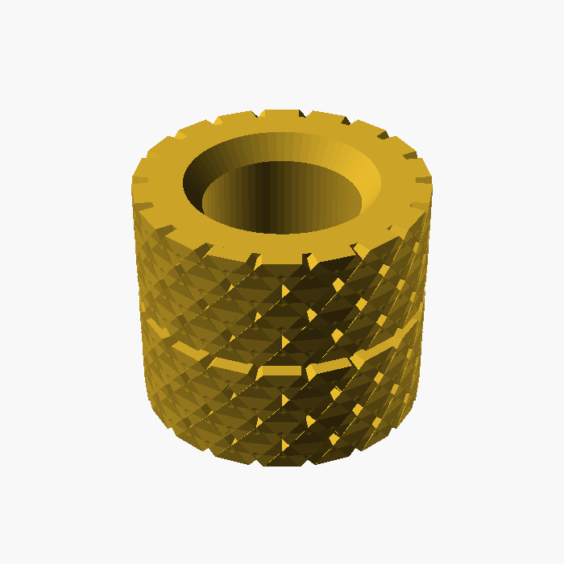
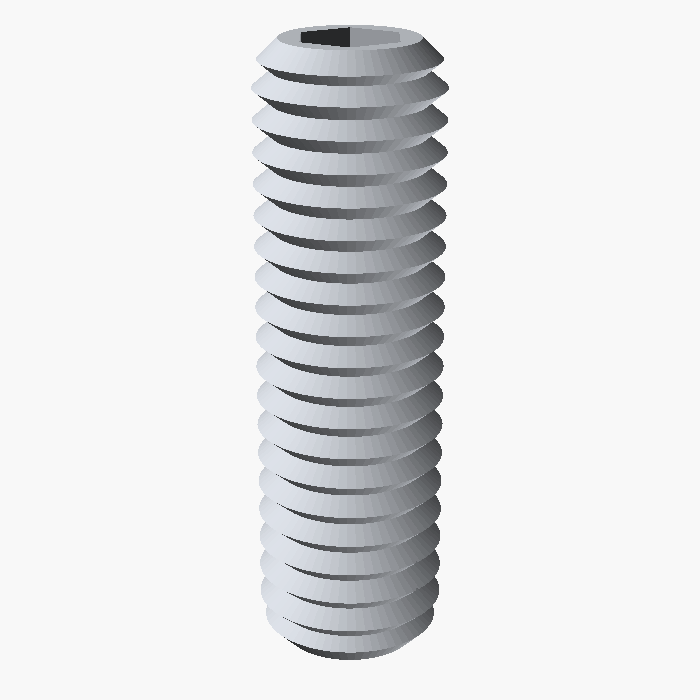
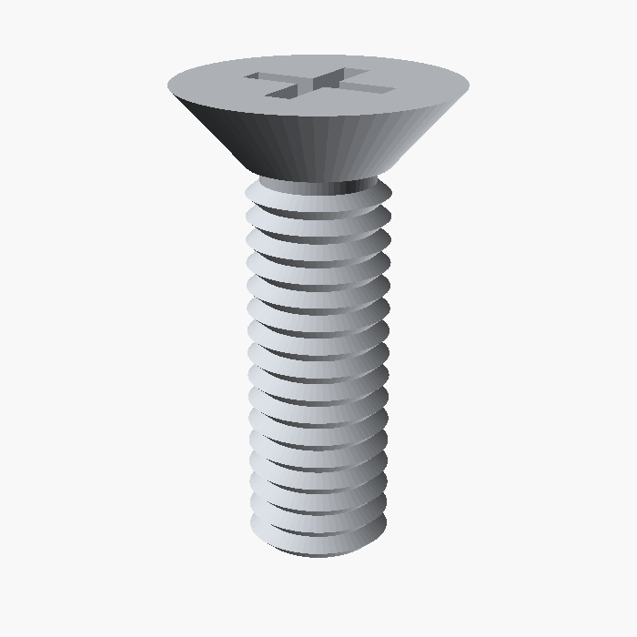

Peças para comprar: 1 suporte de 2 pastilhas com tampa
Ilustrações desenhadas nas medidas nominais (não estão na mesma escala entre si), para comparar com os anúncios. Compre em inox A2 (304) e latão.
4×

Inserto roscado de latão M3 (para fixar a quente)
- Rosca interna M3; comprimento 4 mm; diâmetro externo ~4,5–5 mm, serrilhado
- O furo no modelo é de 4,0 mm (4,1 mm na versão PC). Confira o "furo recomendado" no anúncio e, se for diferente, ajuste
furo_parafuso
- Colocado com ferro de solda a ~260–280 °C no PC. São 2 no fundo (ajuste de altura) e 2 para a tampa
Buscar: "inserto roscado latão M3 impressão 3D" · "heat set insert M3x4"
2×

Parafuso sem cabeça M3 × 10 mm, inox (DIN 913 / ISO 4026)
- Também chamado parafuso allen sem cabeça, grub screw ou set screw; ponta plana
- Sextavado interno de 1,5 mm, para chave Allen de 1,5 mm
- Entra por baixo e empurra o pistão (ajuste de altura da pastilha)
Buscar: "parafuso allen sem cabeça M3x10 inox ponta plana" · "DIN 913 M3x10 A2"
2×

Parafuso M3 × 10 mm cabeça chata escareada, inox (DIN 965)
- Cabeça cônica de 90°, Ø ~5,5–6 mm, fenda Phillips; fica rente à tampa
- Alternativa com sextavado interno: ISO 10642 / DIN 7991 (chave Allen de 2 mm)
- Prende a tampa nos insertos da base
Buscar: "parafuso cabeça chata phillips M3x10 inox" · "DIN 965 M3x10 A2"
Vale comprar kits (ex.: 50–100 insertos M3; caixa com parafusos M3 sortidos) e já levar sobra. Ferramentas: chave Allen 1,5 mm, chave Phillips #1 e ferro de solda (de preferência com ponta para inserto).